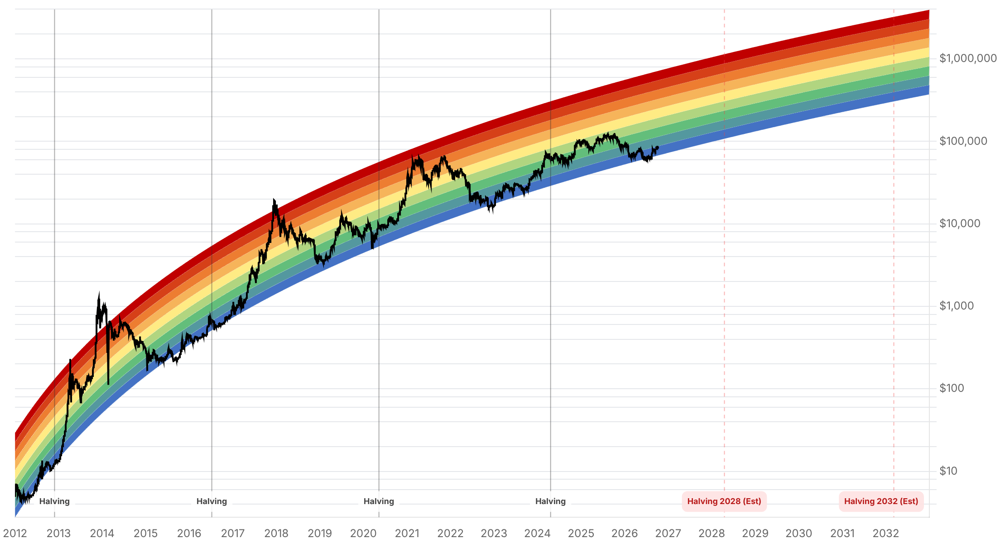

Reporte financiero
BTC cotiza en USD 82.560,23 en vivo (07:21 UTC), prácticamente plano frente al cierre de ayer (+0,01%, USD 82.554,98) -el precio se estabiliza tras el mínimo de casi tres semanas (~USD 80.400) tocado el 8-9 de octubre y confirma que sostiene la zona USD 82.000-83.000 señalada ayer como soporte inmediato. La novedad principal de hoy explica esa estabilización: Donald Trump descartó en un posteo en Truth Social (8 de octubre) cualquier ataque militar contra Irán antes de las elecciones de medio término del 3 de noviembre, citando conversaciones 'productivas' con Teherán -aunque mantuvo el bloqueo naval y reiteró que Irán no debe obtener un arma nuclear-. El anuncio alivió el temor geopolítico y la presión sobre el petróleo que venían golpeando a los activos de riesgo, y coincidió con que BTC recuperara el nivel de USD 81.000 por primera vez desde el 21 de septiembre. En línea con ese alivio, el Fear & Greed Index subió de 59 a 64 hoy, revirtiendo la caída de tres días consecutivos reportada ayer y volviendo a una zona de 'Greed' más firme. En el plano institucional, QCP Capital publicó su outlook trimestral (5 de octubre, cobertura de The Block/Crypto Briefing/PrimeXBT/Phemex) proyectando un rango de USD 80.000-90.000 para BTC en el cuarto trimestre, con zona de compra en USD 80.000-82.000 y de reducción de exposición en USD 88.000-90.000 si los flujos de ETF no repuntan; la firma ve un escenario alcista sobre USD 100.000 si se sostienen las entradas a ETF, baja el dólar y avanza la Clarity Act, y uno bajista por debajo de USD 68.000-70.000 si escala el conflicto en Medio Oriente o hay una venta forzada de algún tenedor corporativo -escenario que el anuncio de Trump sobre Irán hace, por ahora, menos probable-. No se encontró confirmación de los flujos de ETF del 8-9 de octubre (el dato preliminar de ~USD 244M de salida que mencionaba la edición de ayer sigue sin verificarse); el último dato confirmado sigue siendo la salida neta de USD 487,1M del 7 de octubre (IBIT -USD 322M, FBTC -USD 96,4M, cifras de The Block que coinciden en orden de magnitud con los USD 484,9M reportados ayer). Tampoco hay novedades verificables en la respuesta de Tesoro/DOJ a las cartas del Senado sobre Tether, ni en Strategy/Saylor. Sí se confirmó la fecha y el consenso del próximo catalizador mayor: el IPC de septiembre se publica el 14 de octubre a las 8:30am ET, con pronósticos de un salto en la inflación interanual de 3,4% a ~3,6-3,7% (subyacente ~2,4%, según Admiral Markets) -un dato peor al esperado reforzaría el tono hawkish de la Fed de cara a la reunión del 27-28 de octubre.
En un posteo en Truth Social el 8 de octubre, Trump afirmó que Estados Unidos no atacará Irán antes de que los estadounidenses voten el 3 de noviembre, citando conversaciones 'productivas' con Teherán. Mantuvo el bloqueo naval vigente y repitió que Irán no debe obtener un arma nuclear. El petróleo retrocedió con el anuncio y BTC recuperó el nivel de USD 81.000 por primera vez desde el 21 de septiembre -aunque medios como The Defiant notaron que BTC seguía débil en términos de 24 horas al momento del anuncio-. Polymarket asigna ~60% de probabilidad a que la tregua se sostenga hasta el 15 de noviembre; el ministro de Exteriores de Irán dijo que el país responderá a propuestas de EE.UU. en los próximos días, por lo que la tregua se trata como frágil, no como un hecho consumado.
Tras bajar de 64 a 59 entre el 7 y el 9 de octubre (reportado ayer), el índice recuperó hoy exactamente ese nivel previo (64), consistente con el alivio geopolítico del anuncio de Trump sobre Irán y la estabilización del precio en torno a USD 82.500.
El informe trimestral de QCP Capital (5 de octubre, vía The Block, Crypto Briefing, PrimeXBT y Phemex) proyecta a BTC operando entre USD 80.000 y USD 90.000 en el cuarto trimestre, con zona de compra en USD 80.000-82.000 (coincide con el soporte técnico señalado ayer) y reducción de exposición en USD 88.000-90.000 si los flujos de ETF no mejoran. El escenario alcista (sobre USD 100.000) requiere entradas sostenidas a ETF, crecimiento del stablecoin supply, pausa de la Fed, dólar más débil y avance de la Clarity Act -con compras spot reales, no solo cierre de cortos-. El escenario bajista (bajo USD 68.000-70.000) se activaría con una escalada del conflicto en Medio Oriente que presione petróleo y tasas, salidas renovadas de ETF, o una venta forzada de algún tenedor corporativo. El anuncio de Trump sobre Irán reduce, por ahora, la probabilidad del disparador geopolítico de ese escenario bajista.
No se encontró ningún proveedor de datos (Farside, CoinDesk, SoSoValue) que publicara cifras verificadas de flujos de ETF spot de BTC para el 8 o 9 de octubre -el dato preliminar de ~USD 244M de salida mencionado ayer sigue sin confirmarse, por lo que se omite de esta edición en vez de darlo por válido. El último dato confirmado sigue siendo la salida neta de USD 487,1M del 7 de octubre (The Block: IBIT -USD 322M, FBTC -USD 96,4M), en línea con los USD 484,9M ya reportados ayer. Por el lado macro, se confirmó que el IPC de septiembre se publica el 14 de octubre a las 8:30am ET (calendario oficial del BLS), con el consenso de mercado esperando que la inflación interanual suba de 3,4% a 3,6-3,7% y la subyacente se mantenga cerca de 2,4% (pronóstico de Admiral Markets, no cifra oficial todavía). Tampoco hubo novedades verificables en la respuesta de Tesoro/DOJ a las cartas del Senado sobre Tether (siguen sin respuesta reportada desde el 28 de septiembre), ni en la posición de Strategy/Saylor desde la compra confirmada el 5 de octubre.
| Periodo | Valor |
|---|---|
| 4 oct | 86480.3 |
| 5 oct | 85786.59 |
| 6 oct | 85557.56 |
| 7 oct | 83275.93 |
| 8 oct | 81676.34 |
| 9 oct | 82546.32 |
| 10 oct (en vivo) | 82560.23 |
| Periodo | Valor |
|---|---|
| Fear & Greed | 64 |

Con el precio estabilizado en torno a USD 82.500-82.600, la zona de soporte inmediata a vigilar sigue siendo USD 80.300-82.000 (mínimo de los últimos días y zona de compra de QCP Capital); una ruptura sostenida expondría la congestión de USD 79.600-80.000, mientras que recuperar y cerrar sobre USD 83.400-85.400 (zona de liquidaciones concentradas según CoinGlass) reabriría el camino hacia USD 86.500-88.000. El catalizador más próximo es el IPC de septiembre, el 14 de octubre -un dato de inflación peor al esperado (consenso ~3,6-3,7% interanual) reforzaría el tono hawkish de la Fed antes de la reunión del 27-28 de octubre.
El alivio geopolítico tras el anuncio de Trump sobre Irán (tregua hasta las elecciones de medio término, con ~60% de probabilidad de sostenerse hasta el 15 de noviembre según Polymarket) reduce -sin eliminar- el riesgo del escenario bajista de QCP Capital (ruptura de USD 68.000-70.000 ligada a escalada en Medio Oriente). Persiste la tensión entre la demanda corporativa de largo plazo (Strategy en 848.000 BTC) y la fragilidad de los flujos de ETF, cuyo dato más reciente confirmado (salida de USD 487,1M el 7 de octubre) todavía no tiene continuación verificada para el 8-9 de octubre.
Sin cambios en los objetivos de precio de largo plazo ya reportados en ediciones anteriores (Citigroup USD 113.000, Bernstein, Standard Chartered, Tom Lee, NYDIG, Armstrong) ni en el trasfondo regulatorio de fondo (demanda de la ICBA contra la OCC, sanciones a la red A7, investigación sobre Tether) -no se encontró desarrollo nuevo y verificable en ese frente hoy. El outlook trimestral de QCP Capital (rango USD 80.000-140.000 para 2026 según cobertura de Cryptonews) es el marco de referencia institucional más reciente disponible.
La recuperación hacia USD 82.500 coincide directamente con el anuncio de Trump de no atacar Irán antes de las elecciones de medio término, pero Polymarket solo asigna ~60% de probabilidad a que se sostenga hasta el 15 de noviembre y el propio posteo mantiene el bloqueo naval vigente. Un quiebre de la tregua revertiría rápidamente el alivio sobre petróleo y activos de riesgo.
El outlook trimestral de QCP Capital ofrece un rango y zonas de interés coherentes con el soporte técnico ya identificado, pero la firma condiciona el escenario alcista a que se sostengan los flujos de ETF -dato que todavía no está confirmado para el 8-9 de octubre- y el bajista a una escalada geopolítica que, por ahora, el anuncio de Trump hace menos probable.
La ausencia de una cifra confirmada de flujos de ETF para el 8 y 9 de octubre no equivale a que los flujos hayan sido neutros -simplemente no hay fuente verificada todavía. Conviene esperar la confirmación de Farside o un proveedor equivalente antes de asumir una tendencia, en cualquier dirección.